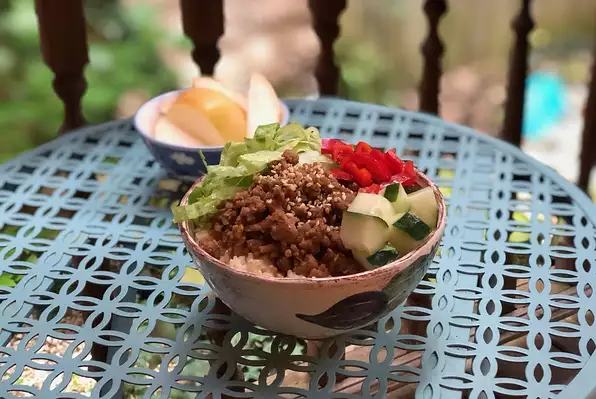

Korean Bulgogi Bowl

Description
Per Serving:
425 calories; protein 26.7g; carbohydrates 36.8g; fat 19.3g; cholesterol 79mg; sodium 986.7mg. Full Nutrition
Ingredients
- 1 pound lean ground beef
- 1 tablespoon sesame oil
- ¼ cup brown sugar
- ¼ cup soy sauce
- ¼ cup water
- etc
Steps:
- Heat a large skillet over medium-high heat. Cook and stir beef in the hot skillet until browned and crumbly, 5 to 7 minutes. Drain and discard grease. Mix in sesame oil.
- Combine brown sugar, soy sauce, water, Asian pear, garlic, ginger, red pepper flakes, and black pepper in a food processor. Blend until combined but still slightly chunky. Pour mixture into the skillet with the beef and cook over medium heat until most of the liquid evaporates, 7 to 9 minutes.
- Place 1/4 the cooked brown rice in the bottom of an individual serving bowl. Top with a portion of beef mixture, lettuce, cucumber, red bell pepper, and sesame seeds. Repeat with remaining rice, beef, and toppings.